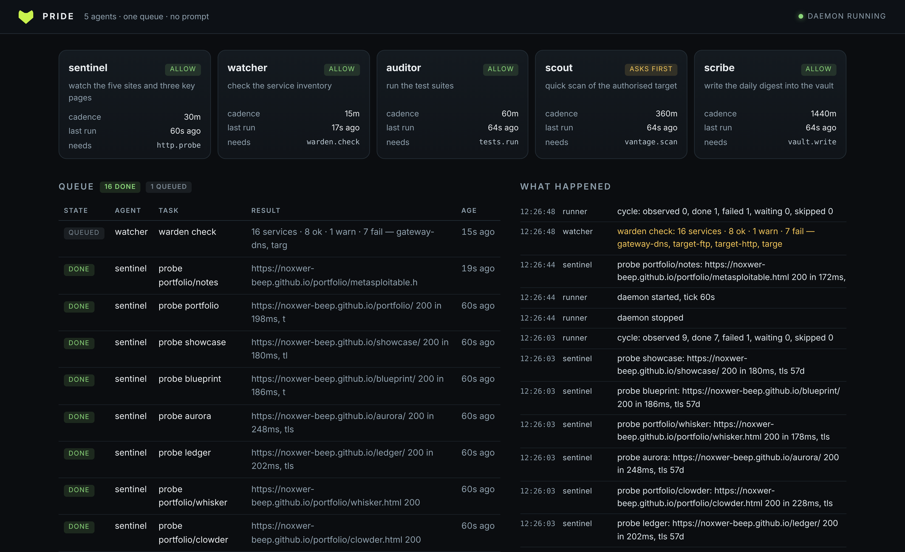

01Work that has a schedule
I have four tools and one question I kept answering by hand every morning: is anything broken. The answer is not a conversation — it is a check that should have run at 03:00 and written down what it found. So the shape of the thing was never "an agent I chat with"; it was a queue, a clock, and a small set of actions with names.

02Two phases, not one loop
The daemon ticks every 60 seconds and splits the pass in two:
observe ask every due agent what needs doing, write it to the queue act take work off the queue, run it in parallel, behind the gate
That split buys three things, and I would not build it without them. A crash while acting never loses the observation, because the queue still holds it. "What is it doing right now" has exactly one answer — a database row. And the policy decision sits between the queue and the outcome, so no agent can route around it by being clever.
03The gate is the safety model
An unattended system is not dangerous because it is fast. It is dangerous because nobody is reading. Every action an agent can take has a name, and the policy file decides what happens to that name:
allow run it now require_approval park it, tell me, wait forbid never — and say so in the log unlisted action forbidden (an agent cannot invent a capability)
Scanning sits behind approval even though the lab is mine, because a scanner is
the one agent here that makes noise on a network. When it asks, the task is
parked with state awaiting_approval, appears in
pride approvals, and does not move until I type
pride approve <id>. A rejection sticks: the
task never runs, and the log says why.
04The bug that taught me the design
Scout scanned the lab target and reported "0 ports, 0 findings". Green. Recorded. The truth was that the Metasploitable VM was switched off.
A host that is down and a host with nothing open are identical in the numbers, and only one of them is good news. That is the whole failure mode of an unattended system in one line: it cannot ask "does this look wrong", so the distinctions have to be built in. Zero ports is now a failure with the sentence attached — unreachable or filtered, not a clean result — and there is a test named after it.
Six more bugs came out of running it for real rather than reading it: a dry run that consumed the queue so the real run had nothing to do, an approval that never stuck and asked forever, a duplicate insert that surfaced as "database is locked", and a runner that wrote a "last run" for all five agents every tick so every card claimed to have run thirty-eight seconds ago.
05Twenty-four hours, unattended
It runs as a systemd user service — no root, no daemon user, and it survives logout and reboot:
[Service] ExecStart=/home/nox/projects/pride/pride daemon --interval 60 Restart=on-failure MemoryMax=512M CPUQuota=50%
The caps matter more than they look. An unattended loop that can eat the machine is a denial of service with extra steps, and the failure mode of "it was fine until it wasn't" always starts with no limit.
06What it deliberately does not do
- No LLM. These agents run a tool, parse a verdict, compare to last time, record it. Adding a model would make it less predictable without making it more useful — and an unpredictable thing with a path to my tools is not something I want on a timer.
- No remediation. It detects, records, and asks. Fixing is a human decision in this design, and the log is the handover.
- No new capabilities. Unlisted actions are refused, so the blast radius does not grow while I sleep.
- No silence that means nothing. A cycle only logs when it changed something, which makes an empty log a statement you can trust.
github.com/Noxwer-beep/pride
— pip install "pride[ui]", then
pride init && pride cycle --dry-run. It
drives Vantage and Warden,
and sits under Clowder as the thing that keeps the
data fresh.